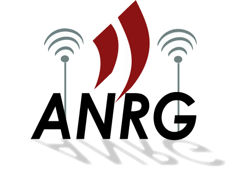
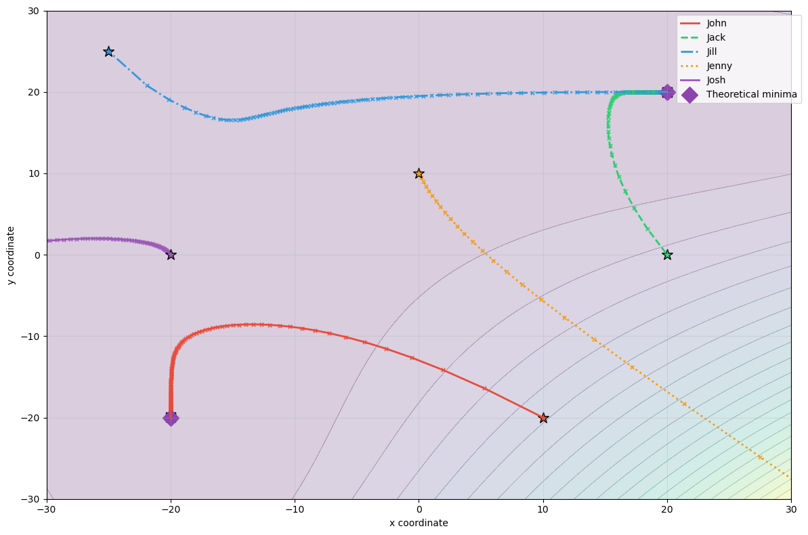
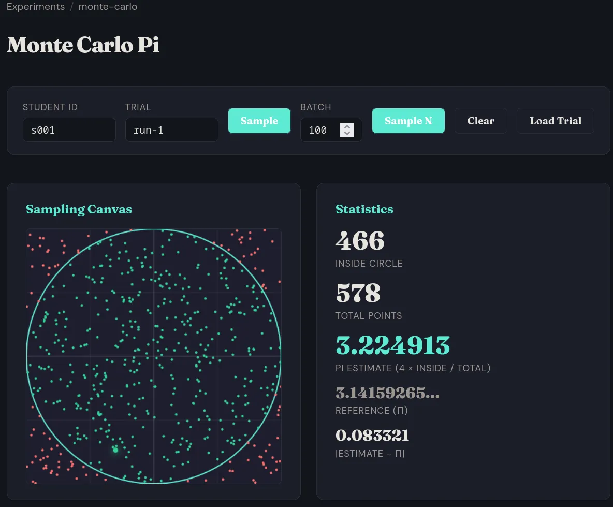
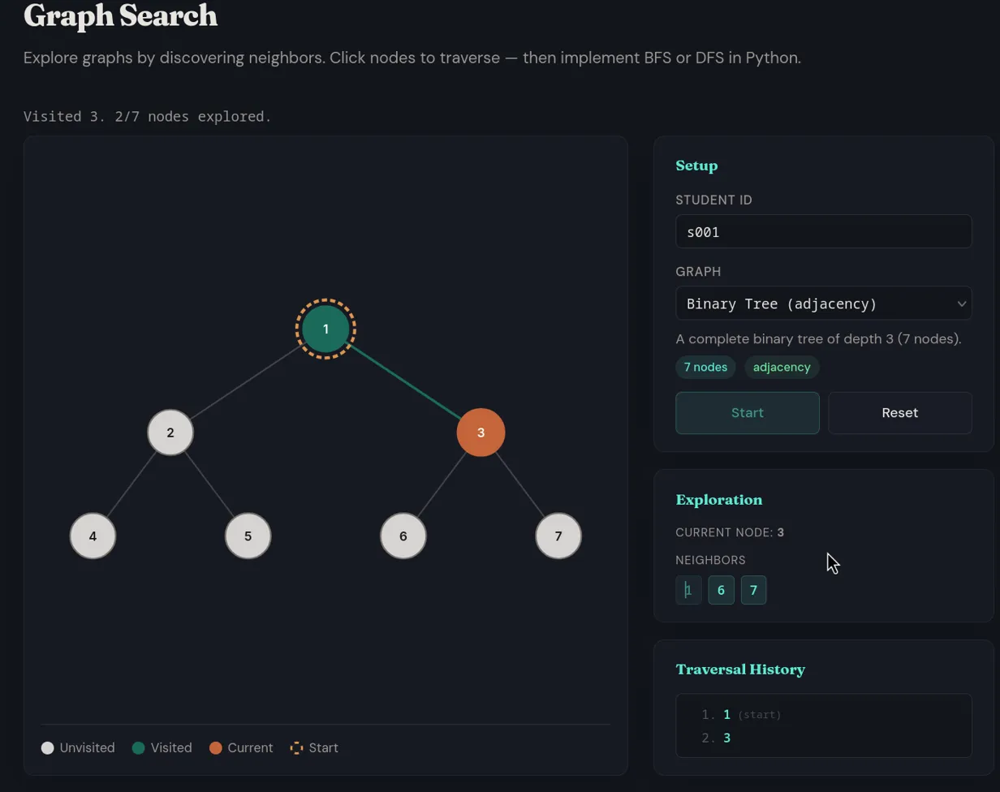

☾
class: title-slide, middle # LEAP2 ## *Live Experiments for Active Pedagogy* <span class="pill">⚡ Lightning Talk</span> <span class="pill green">March 28, 2026</span> <span class="pill purple">19th CCSC Southwestern · UC Riverside</span> <hr> <table class="author-table"><tr> <td class="author-name"><strong>Sampad B. Mohanty</strong></td> <td class="affil">University of Southern California</td> </tr><tr> <td class="author-name"><strong>Sumedh Karajagi</strong></td> <td class="affil">California Academy of Mathematics and Science</td> </tr><tr> <td class="author-name"><strong>Prof. Bhaskar Krishnamachari</strong></td> <td class="affil">University of Southern California</td> </tr></table> <div style="display:flex;justify-content:center;align-items:center;gap:2rem;margin-top:0.8rem;"> <div style="text-align:center;"><div id="qr-slides" style="background:#fff;padding:8px;border-radius:8px;display:inline-block;"></div><div style="font-family:var(--mono);font-size:0.7rem;color:#60a5fa;margin-top:4px;">Follow along</div><div style="font-family:var(--mono);font-size:0.85rem;color:#60a5fa;margin-top:3px;font-weight:700;">tinyurl.com/leaplive2</div></div> <div style="width:1px;height:60px;background:var(--border);"></div> <div style="display:flex;align-items:center;gap:1.2rem;"> <p></p> </div> </div> <span class="slide-hints" style="font-size:0.6rem;color:#475569;opacity:0.5;">`f` fullscreen · `t` toggle theme · `l` admin login to sync slides</span> --- ## Quick Show of Hands <div style="float:right;text-align:center;margin-left:1rem;"><div id="qr-slides" style="background:#fff;padding:4px;border-radius:6px;display:inline-block;width:130px;"></div><div style="font-family:var(--mono);font-size:0.55rem;color:#60a5fa;margin-top:2px;">Scan to follow along</div><div style="font-family:var(--mono);font-size:0.6rem;color:#60a5fa;margin-top:1px;font-weight:700;">tinyurl.com/leaplive2</div></div> - Use **in-lecture demos** in your CS teaching? -- - Students **active participants** in those demos — or passive observers? -- - Other instructors **reproduce or remix** your demo in their class? -- - Students **afraid to make mistakes** when they're one of the few put on the spot? -- - <a href="http://nifty.stanford.edu/" style="text-decoration:underline;">**Nifty demos**</a> hard to adapt without a common framework? -- .box.amber[ What if demos were **shareable, reproducible, and collaborative** — where everyone participates in parallel and mistakes become **visible learning moments**? ] --- ## The LEAP **LEAP** = *Live Experiments for Active Pedagogy* A **unified framework** for creating and sharing interactive, Nifty-like in-class demonstrations. - LEAP serves **instructor-defined functions** as remote APIs - Students **interact with these functions** from their own programming environment — Python, JS, Julia - Interactions are **logged** — student, args, result, timestamp - **Live dashboard** shows everyone's work as it happens - **Share individual experiments** — others can add them to their own lab with `leap add` - **Share entire labs** — a full collection of experiments, cloned and run in one step .box.green[ <span class="dot"></span> Two-way — students drive <span class="dot green"></span> Parallel interaction <span class="dot amber"></span> Mistakes visible <span class="dot purple"></span> Shareable across universities ] --- ## LEAP in Practice: Gradient Descent .cols[ .col[ **Gradient descent lab — real outcome:** Jenny and Josh added the gradient instead of subtracting. → *Gradient ascent.* Visible **live** on the dashboard. Addressed immediately. Whole class learns. .box.purple[ Every lab gets this for free — **parallel exploration**, **live feedback**, **learning from mistakes**. ] ] .col[ <p></p> ] ] --- ## LEAP in Practice: Monte Carlo Method .cols[ .col[ Students estimate π by sampling random points in a unit square. - Call `sample()` to generate a random point - Points inside the unit circle → <strong style="color:var(--green);">green</strong>, outside → <strong style="color:var(--red);">red</strong> - π ≈ 4 × (inside / total) .box.green[ Students see their estimate converge in real time — intuitive introduction to **Monte Carlo methods**. ] ] .col[ <p></p> ] ] --- ## LEAP in Practice: Graph Search .cols[ .col[ Students explore graphs by discovering neighbors one node at a time — then implement BFS or DFS in Python. - Call `start()` to get the root node - Call `neighbor(node)` to reveal adjacent nodes - Click nodes to traverse — build the algorithm by hand first .box.green[ Multiple graph types — binary trees, grids, Petersen graph, cycles — and instructors can add custom graphs via YAML. ] ] .col[ <p></p> ] ] --- ## More Labs Built with LEAP .box.amber[ **This slide deck is itself a LEAP experiment** — with <u>live slide sync</u> and <u>audience interaction</u>. ] --- ## How It Works <div class="cols"><div class="col-40"> <strong>Instructor</strong> <pre><code class="python">def neighbors(node): return graph[node] </code></pre> </div><div class="col"> <strong>Student</strong> <pre><code class="python">from leap.client import Client c = Client(URL, "s042", experiment="my-lab") c.neighbors("A") # ["B","C","D"] </code></pre> </div></div> **Logs** — every call recorded automatically <table class="log-table" style="font-size:0.6rem;"> <tr><th>student</th><th>function</th><th>args</th><th>result</th><th>time</th></tr> <tr><td>s042</td><td>neighbors</td><td>("A",)</td><td>["B","C","D"]</td><td>14:01:03</td></tr> <tr><td>s017</td><td>cost</td><td>("A","B")</td><td>4.0</td><td>14:01:04</td></tr> <tr><td>s042</td><td>neighbors</td><td>("B",)</td><td>["A","D","E"]</td><td>14:01:05</td></tr> <tr><td>s023</td><td>neighbors</td><td>("A",)</td><td>["B","C","D"]</td><td>14:01:05</td></tr> <tr><td>s017</td><td>neighbors</td><td>("C",)</td><td>["A","D"]</td><td>14:01:06</td></tr> </table> --- class: fill-slide ## Let's Try It! <div style="display:inline-flex;align-items:center;vertical-align:middle;margin-left:1rem;gap:0.5rem;"><span style="font-family:var(--mono);font-size:1rem;color:#f59e0b;font-weight:600;">Scan to participate →</span><div id="qr" style="background:#fff;padding:4px;border-radius:6px;display:inline-block;width:80px;"></div></div> .cols[ .col-40[ <iframe id="interact-frame" src="interact.html" style="width:100%;border:1px solid var(--border);border-radius:8px;background:var(--bg);"></iframe> ] .col[ <iframe id="live-frame" src="live.html" style="width:100%;border:1px solid var(--border);border-radius:8px;background:var(--bg);"></iframe> ] ] --- ## Get Started ```bash pip install git+https://github.com/leaplive/LEAP2.git leap init # set up project + admin password leap run # → http://your-ip:9000 ``` .cols[ .col[ **Create an experiment:** ```bash leap add my-experiment # edit funcs/functions.py ``` ] .col[ **Share your experiment:** ```bash leap publish my-experiment ``` ] ] .cols[ .col[ **Discover experiments:** ```bash leap discover --tag algorithms ``` ] .col[ **Install from any git repo:** ```bash leap add github.com/user/experiment leap add https://github.com/user/experiment.git ``` ] ] --- class: divider-slide, middle # Thanks! Questions? **LEAP2** — drop a function, get an interactive lab. <div style="text-align:center;margin:0.8rem 0;"><div id="qr-repo" style="background:#fff;padding:10px;border-radius:8px;display:inline-block;margin:0 2rem;"></div><div id="qr-arxiv" style="background:#fff;padding:10px;border-radius:8px;display:inline-block;margin:0 2rem;"></div></div> Open to research collaborations — classroom deployments, new labs, or just a conversation. <a href="https://github.com/leaplive/LEAP2" style="color:#34d399;">github.com/leaplive/LEAP2</a> · <a href="https://doi.org/10.1145/3770761.3777313">DOI: 10.1145/3770761.3777313</a> · <a href="https://arxiv.org/abs/2601.22534" style="color:#7c3aed;">arXiv: 2601.22534</a> · <a href="mailto:sbmohant@usc.edu">sbmohant@usc.edu</a>
00:00